收录于合集
以下文章来源于UIBE国关团学 ，作者UIBE国关团学
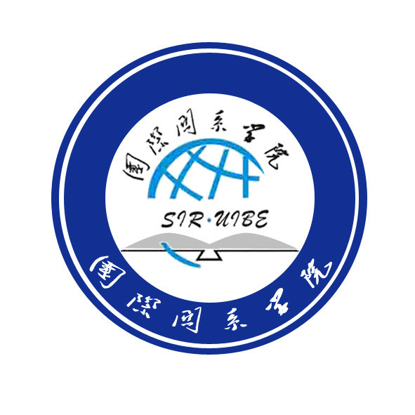 UIBE国关团学 .
UIBE国关团学是学生服务性自治组织，以“自我服务，自我管理，自我教育，自我完善”为宗旨，以“我的国关我的家”为理念，切合学院“小而精”的实际，始终坚持“科学成长”的原则，以“成长”为第一要义，以“以人为本”为核心，形成了鲜明特色。

“新时期中国共产党海外形象建设”学术研讨会暨第二届“公共外交与国际传播”惠园论坛举办
作者： 对外经济贸易大学国际关系学院
来源： 对外经济贸易大学新闻网
2022年4月9日，“新时期中国共产党海外形象建设”学术研讨会暨第二届“公共外交与国际传播”惠园论坛，作为对外经济贸易大学国家开放研究院“喜迎二十大系列学术活动”之一，通过线上视频会议方式在北京举行。会议由对外经济贸易大学国家（北京）对外开放研究院主办，对外经济贸易大学国际关系学院/国家安全与治理研究院协办，对外经济贸易大学公共外交与国际传播研究中心、北京市宣传文化系统高层次人才“‘中国之治’及其国际传播”工作室承办。
围绕“新时期中国共产党海外形象建设”这一主题，来自中国外文局、清华大学、中国人民大学、中央民族大学、北京师范大学、中国传媒大学、北京外国语大学、外交学院、西北大学、南京传媒学院、对外经济贸易大学、中国社会科学院、中国现代国际关系研究院、中国非洲研究院、中国社会科学杂志社等政府机构、高等院校、科研院所和新闻媒体24名专家学者在线研讨。逾200名学者、研究者、媒体记者和学生与会。
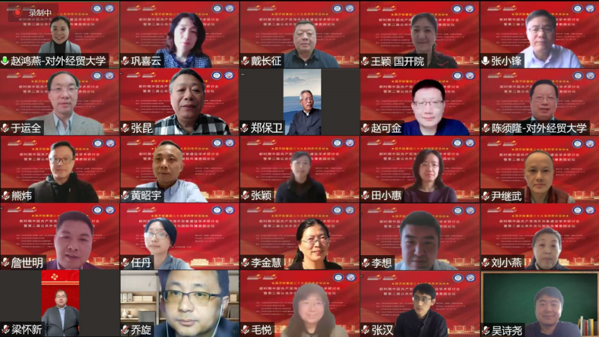
开幕式由对外经济贸易大学公共外交与国际传播研究中心主任赵鸿燕教授主持。对外经济贸易大学党委委员、政治学部部长、国际关系学院/国家安全与治理研究院院长、惠园特聘教授戴长征和对外经济贸易大学国家（北京）对外开放研究院常务副院长王颖研究员致开幕词。
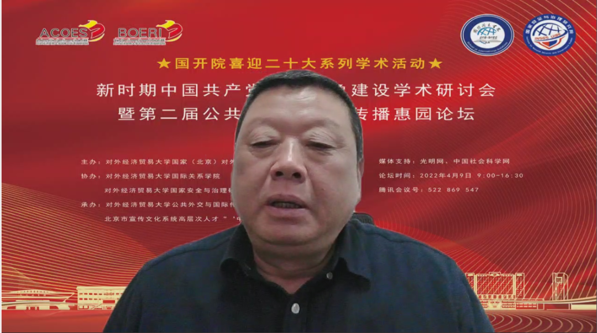
图 戴长征院长致开幕词
戴长征院长对参会的校内外专家表示诚挚的欢迎和感谢，对本次会议的适时举办表示充分肯定并给予厚望。他指出，在党的二十大即将召开、百年未有之大变局加速演进的背景之下，研究“如何讲好中国共产党故事、如何传播中国共产党声音、如何讲清中国共产党理念”，对树立中国共产党乃至社会主义现代化中国的海外形象具有重大意义。他强调，无论是专家学者，还是青年学生，都要积极思考如何为中国共产党海外形象的构建贡献自己的智慧和能力，我们要使党的形象在国际社会就像在中国人民心目中一样，高大起来，辉煌起来，清晰起来，这也是每一个中国公民都必须有的责任，每一个爱国主义者都必须掌握的本领。
戴长征院长就如何建设中国共产党海外形象提出以下建议：第一，要强化正面宣传，理直气壮地来讲中国共产党共产党的辉煌历史、伟大成就和创新理论；第二，要强化斗争思维，提高斗争本领，用西方听得懂的语言进行交流交锋，讲好中国理念、中国理论、中国逻辑，决不能让西方垄断解释权和话语权；第三，要注重培养学术、理论和宣传人才，统筹利用海内外资源，开展多领域、多途径、多渠道的对外宣传；第四，要深刻理解国际斗争的长期性、复杂性和严峻性，做好顶层设计与战略谋划。
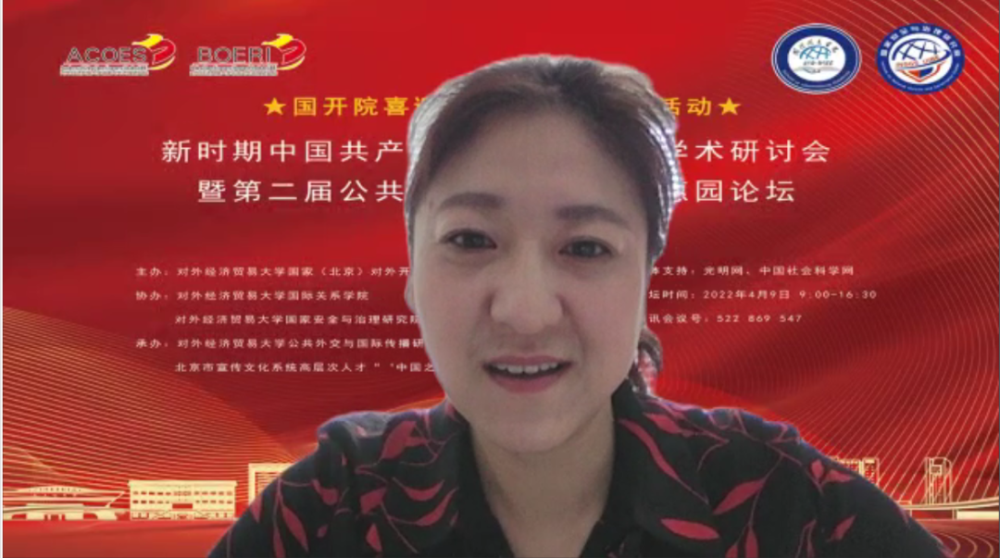
图 王颖常务副院长致开幕词
王颖常务副院长代表会议主办方向与会的专家学者表示欢迎，介绍了对外经济贸易大学国家（北京）对外开放研究院的建设情况。研究院是对外经济贸易大学响应国家和北京市对于智库建设的迫切需要，集中优势资源而创建的科研机构，主要研究领域涵盖北京国际交往中心建设、新时期北京对外开放、北京融入国家“一带一路”倡议等。近年来，研究院各类成果报告获得省部级以上领导批示78篇，获得中央各部委和北京市的决策采用43篇，被各类内参采纳172篇。
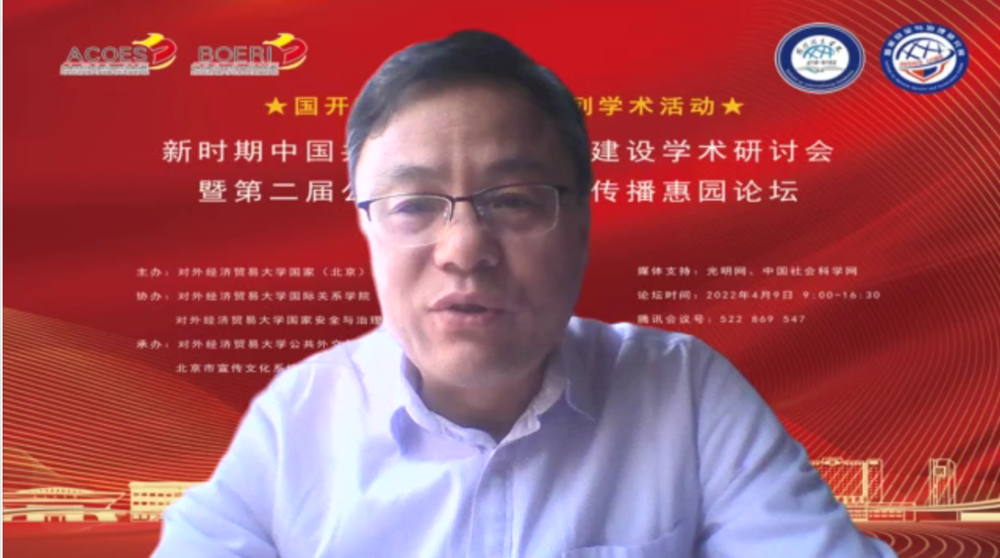
图 张小锋部长主持
会议第一阶段的议题为“话语分析”，由对外经济贸易大学党委常委、宣传部长张小锋教授主持。
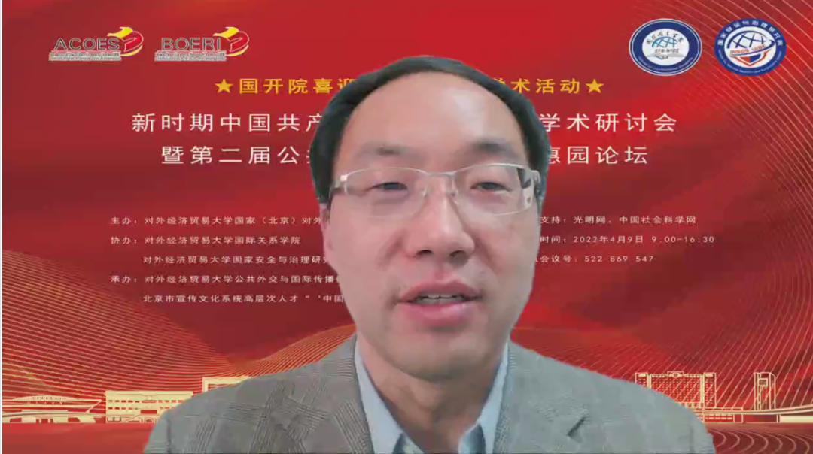
图 于运全院长主旨发言
中国外文局当代中国与世界研究院院长于运全研究员对如何讲好新时代中国共产党治国理政的故事发表主旨演讲。于运全院长认为，我们应主动向国际社会讲好中国共产党故事，塑造党的国际形象。他指出，我们党在对外讲述自身故事的时候，有很多好的历史经验可以汲取。这两年是我们对外讲好党的故事、塑造党的形象的一个重要窗口期。从话语建构的角度，讲好中国共产党的故事需要讲清三个逻辑，即历史逻辑、理论逻辑和实践逻辑。于运全院长从国际传播的维度强调，中国共产党形象的塑造需要做到专业、精准、有效，为此，他提出四项举措：一是统筹好大众传播和专业传播的关系，重点做好专业传播；二是发挥好智库、专家的重要作用；三是进行专业研讨，国际研讨和交流尤为重要；四是加强国际中共学和中国学研究，这就需要通过跨学科研究来形成合力。
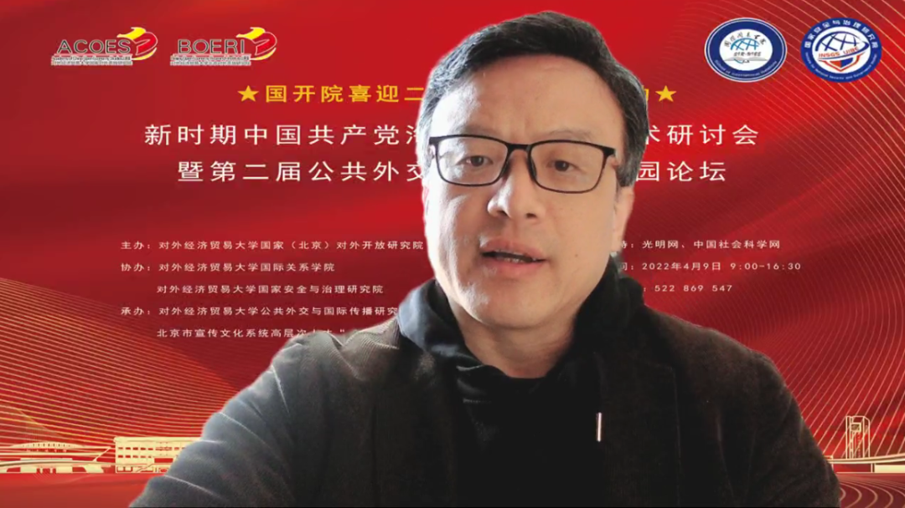
图 熊炜教授发言
外交学院区域与国别比较外交研究中心主任、外交学系教授熊炜从时代主题与外交话语变迁的视角对讲好中国共产党故事的经验进行了深入剖析。熊炜教授认为，面向国际受众和海外群众讲述中国共产党故事，单向输出不可取，需要站在听众的角度组织讲故事的逻辑。这种逻辑包括：第一，以小见大，应多借助细节的叙述表现或者具体的场景，折射出当代中国发展的时代风貌；第二，加强代入感，让外国友人能够通过中国共产党的故事置身其中，更多地了解中国在新时代的发展成就；第三，发扬新中国外交的历史传统和风范，真正做到求同存异，展现中国共产党人、中国文化的独特风采。
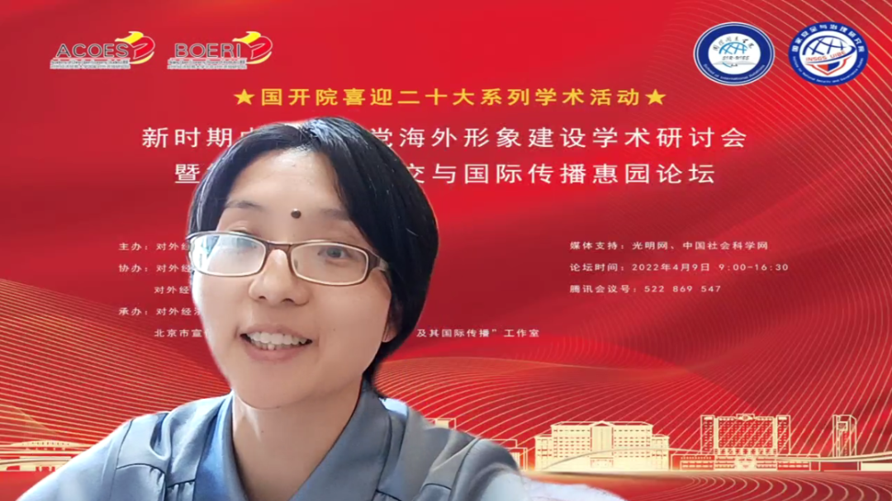
图 任丹副教授发言
南京传媒学院文化管理学院副院长任丹副教授就新时期中国共产党海外形象的影像传播展开分析。她对新时期中国共产党海外形象的影像传播提出如下策略：在选题的策略上，要聚焦新时期国家的重大战略，着重宣传今日中国的新气象新面貌；在叙事的策略上，要在宏大的叙事体系中要塑造好鲜活的个体共产党员形象，通过优秀中国共产党员典范的故事，反映中国共产党人的精神气质，形成中国共产党的精神谱系。
图 李想博士发言
中国社会科学杂志社记者与编辑李想博士结合其在北京冬奥会期间的采访调研的一线经历指出，北京冬奥的成功是中国共产党对奥林匹克运动的支持，也是中国共产党参与全球事务的一种积极信号。北京冬奥突出了“人民性”的特点，从统一领导、百姓参与、志愿服务等方面看，北京冬奥的成功就是中国共产党的成功。另一方面，李想博士针对北京冬奥会在对外传播方面的特点，提出注重民间传播和“一国一策”等建议。李想博士还指出，对外传播构建在专注顶层设计的同时，不能忽视基层建设，要让基层形象“走出去”。
图 陈须隆教授主持
会议第二阶段的议题聚焦“形象构建”，由对外经济贸易大学国家安全与治理研究院常务副院长、惠园特聘教授陈须隆主持。
图 赵可金教授主旨发言
清华大学社会科学学院副院长赵可金教授进行了主旨发言。他认为，新时期中国共产党海外形象建设不能就形象谈形象，应关注身份问题，而身份定位需要框架研究和传播。赵可金教授指出，在百年未有之大变局的背景下，权力转移、发展转型、技术变革、思想激荡的张力加大了中国共产党融入国际社会的身份认同压力，导致中国共产党的形象建构难度更大，形成了形象定位及其背后身份认同的数字鸿沟。克服数字鸿沟的关键是通过框架创设、转化、传播和巩固的专业设计，整合资源形成强大合力。在正面引导的同时，也要直面问题和挑战，逐步实现中国共产党国际形象传播的软着陆。
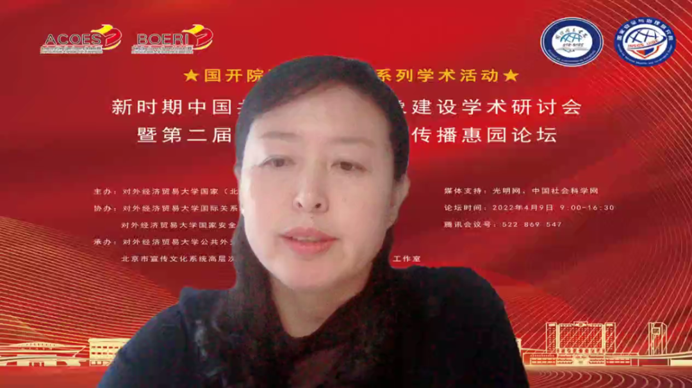
图 张颖教授发言
北京外国语大学国际关系学院教授、《国际论坛》编辑部副主任、《区域与全球发展》编辑部主任张颖介绍了国外主流报纸中的中国共产党形象。张颖教授通过运用定性与定量相结合的研究方式对西方和拉美主流媒体进行统计分析，发现了中国领导人和中国共产党积极、正面的形象得到了应有的客观、真实、中立报道。张颖教授指出，构建党的形象需要进一步提升媒体的公信力，加强与当地主流媒体的合作，聚焦地区受众关心的议题，同时也需要多利用新媒体的平台拓展传播渠道，充分构建多元化的传媒体系，使传媒方式更加多元化。
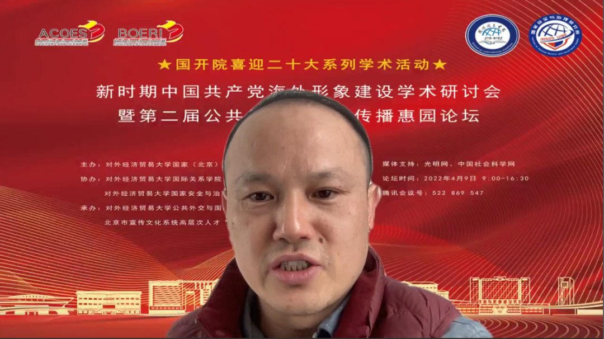
图 尹继武教授发言
中国人民大学国际关系学院教授尹继武指出，基于主体间存在的不一致性，政党特质与领导力的形象投射在不同的国际受众之间存在较大差异。这种差异性在短期内可能很难消解，甚至在一定意义上会进一步恶化，背后可能是基于意识形态或者价值观的偏见刻板印象。尹继武教授从社会学和认知心理学的观察视角进一步指出，政党或国家会有意识地进行积极特质的形象塑造，而社会存在政治多元性与复杂性，社会中也并非只有一种声音，国际社会的认知者可能会更加在意那些与建构者自身塑造形象相反的一些要素，这些没有被观察或控制到的要素，有时会对政党特质与领导力的形象投射产生显著影响。
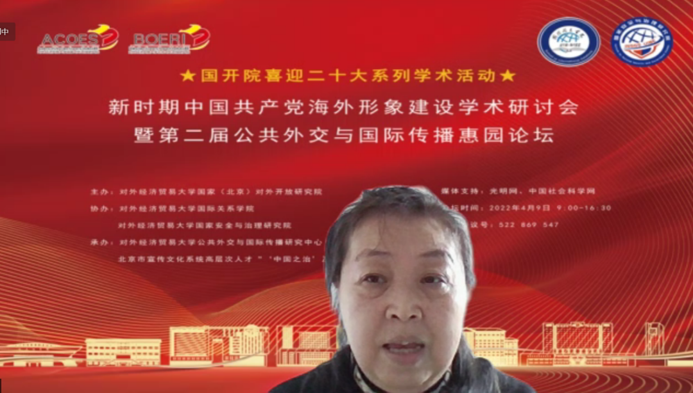
图 刘小燕教授主持
会议第三阶段的议题为“内涵探索”，由中国人民大学新闻学院教授刘小燕教授主持。
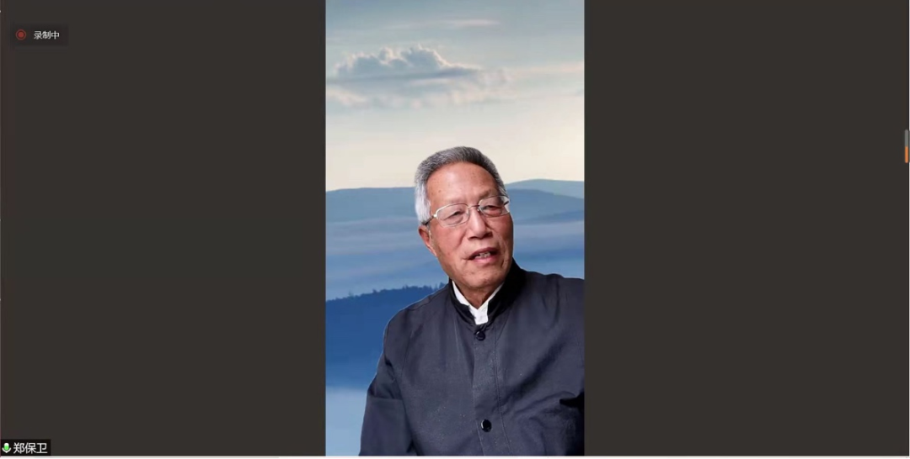
图 郑保卫教授主旨发言
中国人民大学新闻学院教授、广西大学特聘君武荣誉教授郑保卫基于气候传播实践的思考，提出关于新闻学者的公共外交意识与国际传播素养的有意见解。郑保卫教授从四个方面分享了自己的体会。第一，中国气候变化海外形象经历了从参与者到贡献者到引领者的历程。第二，郑保卫教授与气候变化传播结缘始于对哥本哈根气候大会的深刻反思，历经十年筚路蓝缕的努力奋斗，终于修成正果，为气候传播做出自己的贡献。第三，应将气候传播纳入公共外交工作，以提升中国国际话语权。学者也是公共外交家。第四，要做好战略定位，掌握行动策略、讲求传播艺术，掌控气候话语权，做好气候传播。郑保卫教授强调：国际传播要解决两个问题即“传播什么”和“怎么传播”。在“传播什么”问题上，传播内容涵盖知识、理念、主张、做法、成就、经验等。在“怎么传播”问题上，要讲述故事、阐明立场、讲清道理、表达情感，做到“早说话、多说话、说明白话”。郑保卫教授提出要构建“五位一体”或“5+1”的气候传播行为主体行动框架，包括政府、媒体、NGO、企业、公众和智库。最后，郑保卫教授总结说：要增强公共外交意识，掌握公共外交技巧；要提升国家国际传播能力，塑造国家中国气候形象；要担负新闻学者责任，服务国家气候战略。
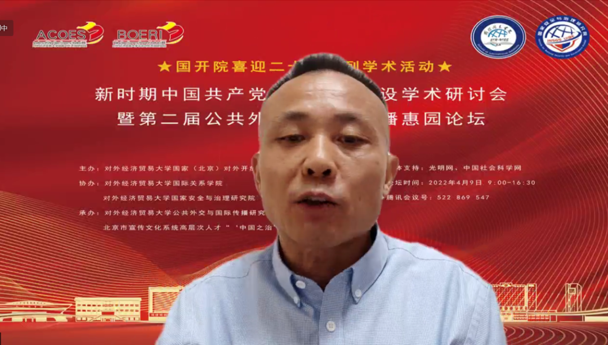
图 黄昭宇研究员发言
中国现代国际关系研究院研究员、《现代国际关系》副主编黄昭宇从四个方面分享了对外形象构建中政治性与科学性的有机统一。首先，对外形象建构必须服从和服务于国家的发展大局和民生大局。第二，对外形象建构必须认清和适应国际社会现实与人类文明的潮流。第三，对外形象的建构要遵循国际化与传播的固有规律。第四，在不可避免的斗争实践中要运用好战略战术。
图 张汉副教授发言
北京师范大学中国社会管理研究院/社会学院副教授张汉从比较政治学的角度分析中国新型政党制度的国际话语权建构，阐述了讲好中国新型政党制度对中国共产党的意义、中国新型政党制度需要国际化的重要原因以及所面临的理论话语资源不足、认知度不足、实践维度相对不透明的三大挑战。最后，张汉教授提出加强比较政治学的研究进而对建构国际话语权做出贡献的观点。
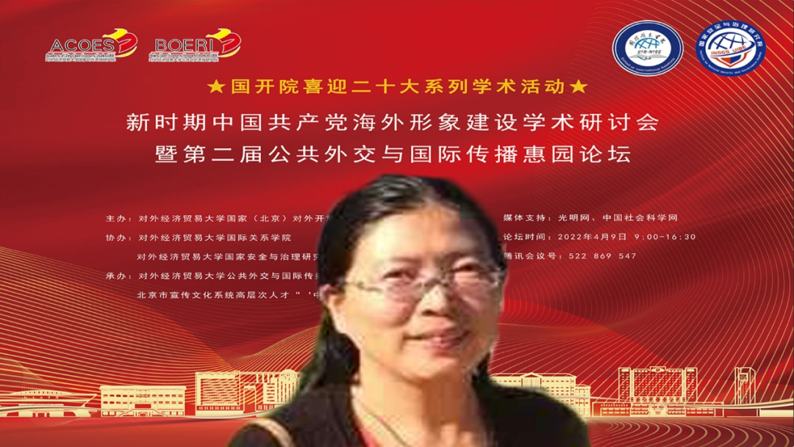
图 李金慧副教授发言
西北大学外国语学院李金慧副教授分析了中国共产党海外形象的主体承担及传播策略。李金慧副教授认为，在实行了很多传播策略之后中国还面临着国际话语困境这一问题值得探讨，并从构建中国共产党海外形象的群体承担和个体承担两大主体以及基本的传播策略三个方面进行了探讨。李金慧教授指出，应该更加重视个体承担，包括中国共产党领导人的形象、Z世代和海外网红三个方面，而基本传播策略主要包括真实传播、把握适度性、讲好典型的中国故事三个方面。
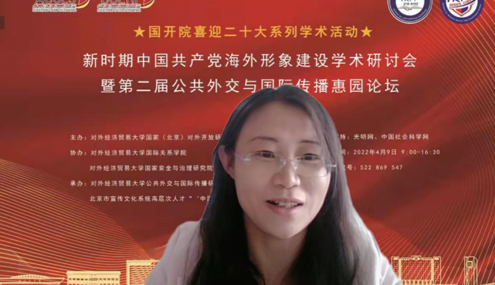
图 王晶博士发言
中国社会科学院马克思主义研究院助理研究员王晶博士分享了当前中国共产党国际形象传播的现状、难点与路径。王晶博士指出，从主体的角度讲，中国共产党加强国际形象塑造的主体意识和能力在增强；从客体的角度讲，中国共产党的国际形象成为西方学界所关注的热点议题。海外研究中国共产党的学者人数不断增加，甚至形成“海外中共学”。针对当前中国共产党国际形象传播的难点，王晶博士提出：主体方面包括在内容上要科学立体深入地阐释党的伟大成就、重要理论和重大方针政策，在渠道上要开拓新的传播平台，形式上要加强文艺作品创作；客体方面包括发动爱国华侨的传播力量、吸引对华友好的国外记者、以国际文化交流作为传播契机等。
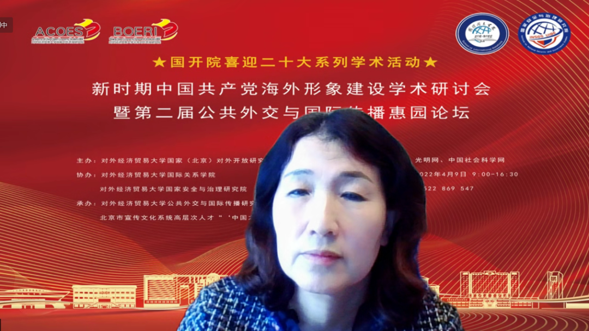
图 巩喜云书记主持
会议第四阶段围绕“国际传播”议题展开讨论，由对外经济贸易大学国际关系学院党委书记巩喜云研究员主持。
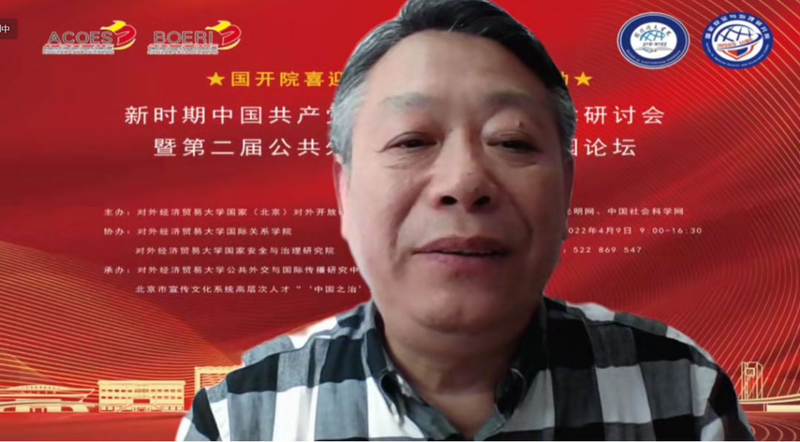
图 张昆院长主旨发言
中央民族大学新闻与传播学院特聘院长张昆教授从习近平国际传播理念的溯源和习近平国际传播观的内涵两个方面进行主旨发言。张昆院长梳理了习近平国际传播理念的相关阐述，认为习近平对国际传播的思考，从起初针对国际传播的某个方面到后来越来越深、越来越全面、越来越系统化，从传播媒体、传播内容到传播者、传播策略，从软实力、话语体系、话语权到国家形象国际舆论，从网络发展到媒体融合，再到大外宣战略，涉及到国际传播的方方面面及传播过程的诸多环节。张昆教授指出，习近平国际传播观的内涵主要包括建立战略传播体系，向世界展示可信、可敬、可爱的中国，提升国际话语权，加强国际传播理论研究，以人为本建立国际传播的统一战线等五个方面。张昆教授进而阐明了习近平国际传播观的重大意义：它是对中国当代国际传播实践的经验总结和理论升华，也是具有中国特色的独创性思想成果；它是马克思主义新闻传播思想发展的最新的成果，也是马克思主义的新闻传播思想与当代的中国国际传播实践相结合的一个产物；它提出了新时代国际传播的新的使命、指导原则，策略艺术和行动的路径，为当下的国际传播实践提供了理论指导和智力支持。
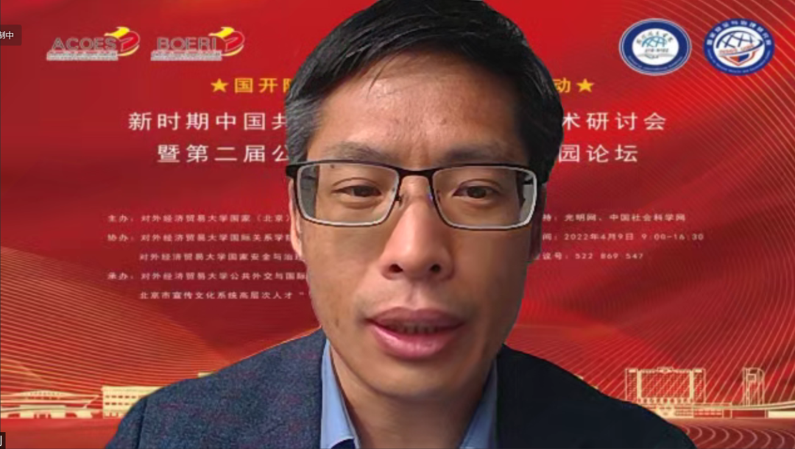
图 赵新利院长发言
中国传媒大学广告学院院长赵新利教授分享了中国共产党在日形象的历史与现状。赵新利院长分享了他对日本馆藏的中国共产党新闻史料的研究，指出，日本的半官半民机构、官方机构和偏左翼的日本学者等对中国共产党有着深入研究。赵新利院长具体介绍了抗战时期中国共产党外宣的案例，如八路军战士学习日语口令和日语歌曲等。赵新利院长指出，中国共产党在抗战时期的一些国际舆论工作和国际舆论战的经验，有很多值得借鉴，尤其是使用外语、外媒、外嘴、外脑的经验。
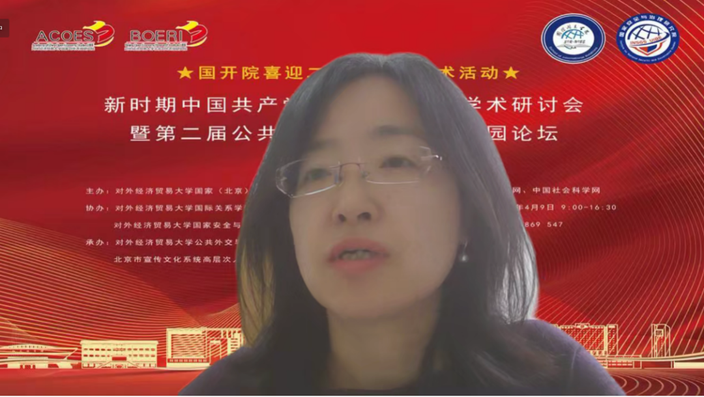
图 田小惠教授发言
北京外国语大学国际关系学院院长助理田小惠教授分享了中欧关系视角下的中国共产党海外形象构建的看法。田小惠教授认为，中欧关系具有重要性、全面性和连续性的特点，在进行交流和传播的过程中要重视受众和我们的差异性，除官方渠道外，还要注重民间机构的作用。基于中欧关系的发展特点以及欧洲社会的特性，田小惠教授分享了对于中国共产党海外形象构建的五点思考。第一，中国共产党构建新的话语能力在不断加强。第二，针对欧盟欧洲国家内部的不同国家和特点，制定有针对性的次区域的交往和传播方式。第三，在加强党际交往的同时，应该注重政府和政党交往的同步性。第四，从受众的角度出发，更多的应该注重对青年群体的特定的传播内容和方式的解读和传播策略。第五，加强多主体在讲述中国共产党的故事中的作用。
图 詹世明主任发言
中国非洲研究院副研究员、《西亚非洲》编辑部主任詹世明分享了对于当前中国共产党在非洲形象构建的几点思考。詹世明主任认为，非洲是我党我国形象构建最重要的地区之一，有着良好的基础和机遇，同时也面临着现实和潜在的诸多挑战。从民调来看，由于中国和非洲国家没有激烈的利益冲突，这是因为中国同非洲都有着反帝反殖的斗争、非洲有着丰富的社会主义经历。至于中国在非洲形象构建所面临的挑战，詹世明主任指出，首先要正确认识非洲在国际场合与中国合作是秉持实用主义态度的。其次，中非之间存在潜在的意识形态矛盾，意识形态的差异、政治制度的差异、发展道路的差异还是非常大的。最后，要警惕大国竞争在非洲的蔓延。从中国自身来看，中国在非洲的形象构建面临着形象构建投入相对不足、传播方法和技术手段相对落后、有时缺乏同非洲平等交流的心态等挑战。
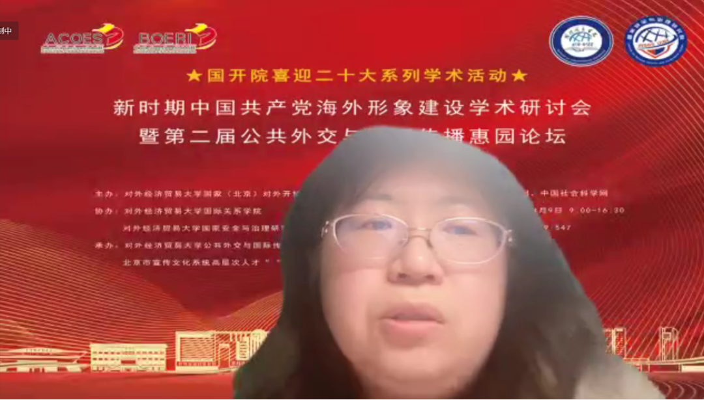
图 毛悦副主任发言
中国社会科学院亚太与全球战略研究院《南亚研究》编辑部副主任毛悦副编审分析了新时期我党在印度形象建设的优势与挑战。毛悦副主任从我党在印度的海外形象的勾勒概述、在印度塑造海外形象的优势与挑战三个方面进行了分享。她分别分析了印度英语媒体、左翼媒体和印地语媒体对中国的形象勾勒，基于目前我党海外形象的情况，指出中印共同关切是中国在印度塑造海外形象的优势，包括执政效果、国家目标、国际事务三个方面。中国在印度海外形象塑造主要面临缺乏民间基础、印度大国梦和国内发展艰难缓慢的冲突导致对华认知复杂、边界冲突三个方面的挑战。
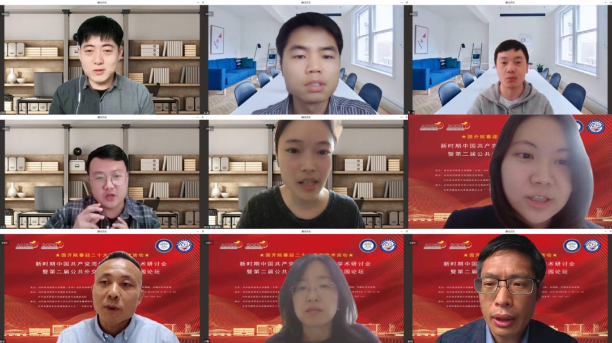
图 互动讨论
会议互动讨论环节，对外经济贸易大学研究生积极向与会专家提问并分享自己的参会体验。李兵博士、毛闰铎博士、刘文龙博士、白卫东博士以及对外经济贸易大学硕士研究生黄宝仪、周子煊等人参与了互动。与会的熊炜教授、黄昭宇研究员、田小惠教授、赵新利院长、王晶博士、李想博士等专家学者对研究生的问题做了充分的回应。会议互动环节交流热烈，精彩纷呈。
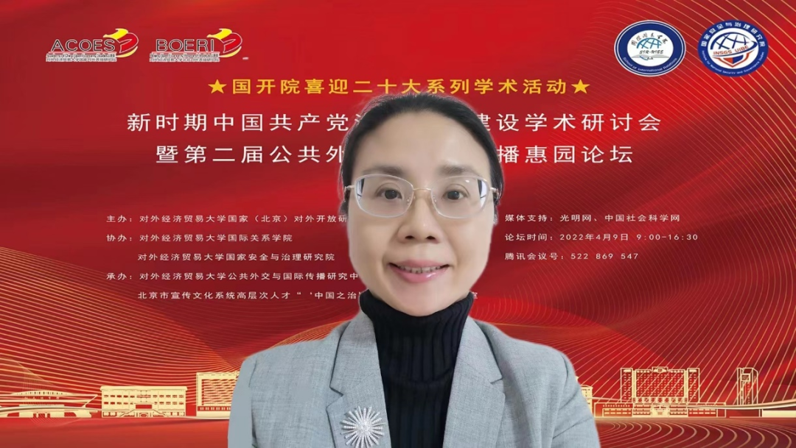
图 赵鸿燕教授总结
对外经济贸易大学国际关系学院/国家安全与治理研究院教授、公共外交与国际传播研究中心主任赵鸿燕进行了闭幕总结。赵鸿燕教授对所有发言嘉宾和参会人员表示感谢，对国家（北京）对外开放研究院的项目支持表示感谢。赵鸿燕教授指出，本次研讨会有两个特点：一是阵容强大，二是“虎头虎尾”。赵鸿燕教授总结说，这次研讨会很荣幸地邀请到了国际关系学、新闻传播学、政治学、外交学、区域国别研究等跨学科、多领域的专家，围绕中国共产党海外形象建设这一宏大主题展开了讨论。《系统科学》的作者丘奇曼说过，“许多社会科学的解决办法都可以在两个或以上的学科之间的相互作用中，而不是在一个单一学科里，得到最好的发展。”在世界百年未遇之大变局的新形势下，更需要用一种跨学科、多领域的视角更广泛地看问题。为此，今天这种研讨十分必要，未来还可以做进一步探讨。
排版 | 王慧瑜
本文章来源于“对外经济贸易大学新闻网”，
文章观点不代表本平台观点。